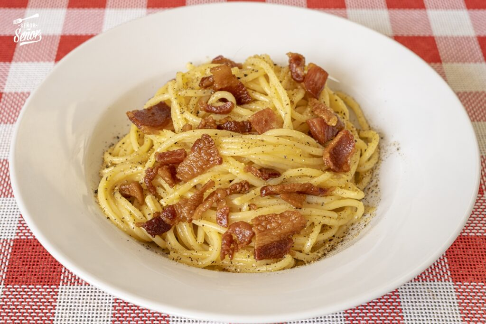

Pasta Carbonara

Ingredientes
- 400 gr de espaguetis
- 2 sobres de Caldo en Polvo Tocino, Ajo y Cebolla Gourmet
- 1 cucharada de mantequilla
- 200 gr de tocino, picado
- ½ cucharadita de Ajo Fresco Gourmet
- 3 huevos, levemente batidos
- 2/3 taza de queso parmesano rallado
- Mix de Pimientas Gourmet
Preparación
- Poner a hervir 1 litro de agua. Una vez que el agua haya hervido, agregar el contenido de los sobres de caldo en polvo y los espaguettis, cocinar por el tiempo que diga en las instrucciones de la pasta.
- Mientras tanto, derretir la mantequilla en un sartén, agregar el tocino picado y cocinar hasta que esté dorado. Agregar la pasta de ajo y revolver hasta integrar; apagar el fuego.
- Sacar los tallarines del caldo (reservando al menos 3 tazas de caldo de cocción) y agregarlos al sartén con el tocino. Agregar los huevos batidos, parmesano y revolver hasta integrar. Agregar caldo de la cocción reservado, lo suficiente para tener una salsa cremosa. Servir la pasta inmediatamente, espolvoreando pimienta fresca.